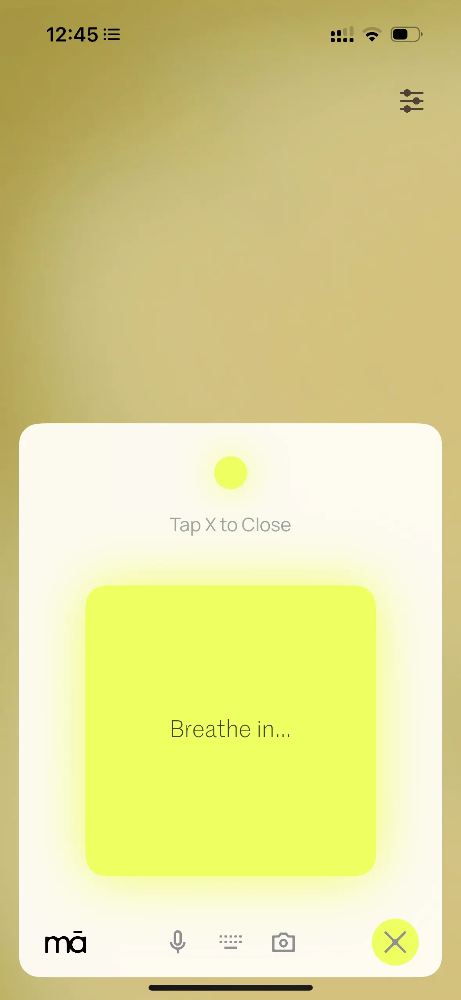
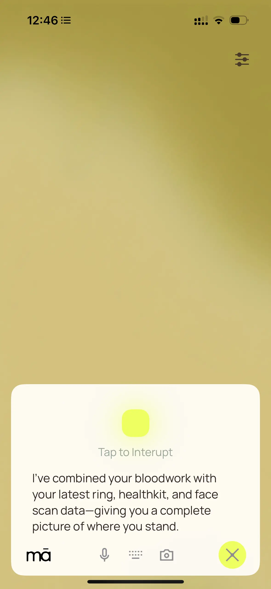
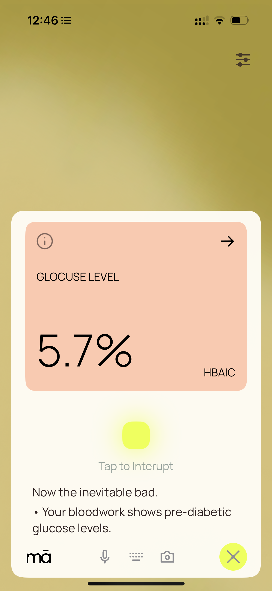
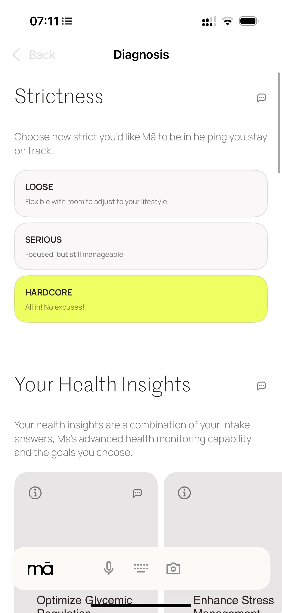

Mā AI lab
In our AI Lab, we’re designing the intelligence behind a new operating system for our health: ambient, human-like, and proactive by design. Our work focuses on three core pillars: operating capability, ethereal performance, expert knowledge.
Operating Capability
How can we translate high-dimensional health data into real-time, adaptive plans and interventions—creating a system that doesn’t just track, but actively guides?
Ethereal Performance
How can we build an interface that transcends modality and device, compressing health complexity into clear, intuitive signals that meet people where they are?
Expert Knowledge
How can we train and evolve an LLM kernel on the core domains of proactive health—lifestyle medicine, epigenetics, systems biology, and biotechnology—so that humanity can live healthier, longer, and more fulfilled lives?
Research
Laying The Foundation For A Personalized, Ambient HealthOS: Our First Working Prototype.
March 19, 2025Ruben Smit
we believe health orchestration should feel as natural and ambient as daily life itself—always present, quietly adaptive, never overwhelming. The finalization of our prototype marks an important first step toward that vision: building the foundation for an operating system where health guidance is not something you seek out, but something that meets you—precisely when and where it matters.
Over the past months, we’ve focused on designing and testing an intelligence layer that makes health feel human and easy by default. By moving away from dashboards, dense reports, unattainable interventions, the system engages through timely intervention and clear dialogue.
The heart of this first iteration is the design of our interface. In shaping it, we kept returning to a core question: How can we translate a deeply personalized, dynamic health regimen into a single, progressive signal—turning static plans into adaptive systems that respond in real time and stay anchored in the present?
This became The Flow: When you’re On Track, your biology and behavior are aligned. When you drift Off Track, the system intervenes—autonomously yet modestly—gently guiding you back toward balance. It transforms a static plan into a fluid flow—with a deep focus on the present.
Three Core Foundations Behind The Flow
The early architecture of Mā’s HealthOS rests on three essential pillars—designed to work together as an adaptive, self-learning system.
1. Device- and Modality-Agnostic Interaction Layer
Mā’s Portal serves as the primary interface between user and system:
- Fully conversational, and capable of multi-modal interaction (voice, text, video).
- Capable of transcending device silos, integrating seamlessly across wearables, mobile, desktop, Airpods, and future Mā ethereal products.
- Human-like interaction—meeting users in the moment, in natural language, with context awareness and emotional intelligence.

note: wide-screen may distort image and video quality
2. Dynamic Plan Generation and Adaptive Behavioral Orchestration
- Translates granular biological input—such as biomarkers, bloodwork, wearables, behavioral patterns—into deeply personal regimen and real-time action plans.
- Covers key health domains: supplementation, nutrition, movement, mindfulness, and sleep.
- Supports both scheduled planning and dynamic, real-time interventions triggered by data deviations or user requests.


3. Context Synthesis and Health Status Compression
- Aggregates and analyzes hundreds of health data points into one clear, interpretable signal: On Track or Off Track.
- Mā learns how you live. It begins with flexible thresholds, adapting as it learns from your data. You decide how strict—or forgiving—you want The Flow to be.
- When Off Track, the system generates context-specific interventions—whether adjusting a meal plan, modifying exercise intensity, or recommending recovery protocols.
”Hi Mā,
I just ate a doughnut”
click video for sound

Rebuilding Healthcare On First Principles
This prototype provides critical insight into how interaction design, large language models (LLMs), health science, and biometric data can operate together as a cohesive, reasoning system, rebuilt from first principles:
- Health takes shape in the present
- Simplicity outperforms complexity
This is the groundwork for what we believe will become the world’s first ambient HealthOS—an autonomous, learning system that senses, thinks, and guides. Not to measure your life—but to help you live it, intelligently and effortlessly.
Join Mā,
we think you’ll
love it here
We’re a San Francisco–based team of scientists, engineers, designers and builders on a mission to weave health into the rhythm of everyday life. Both culture and product are shaped by simplicity, clarity, and presence—transforming physical and mental well-being through the power of beautiful, thoughtful technology.